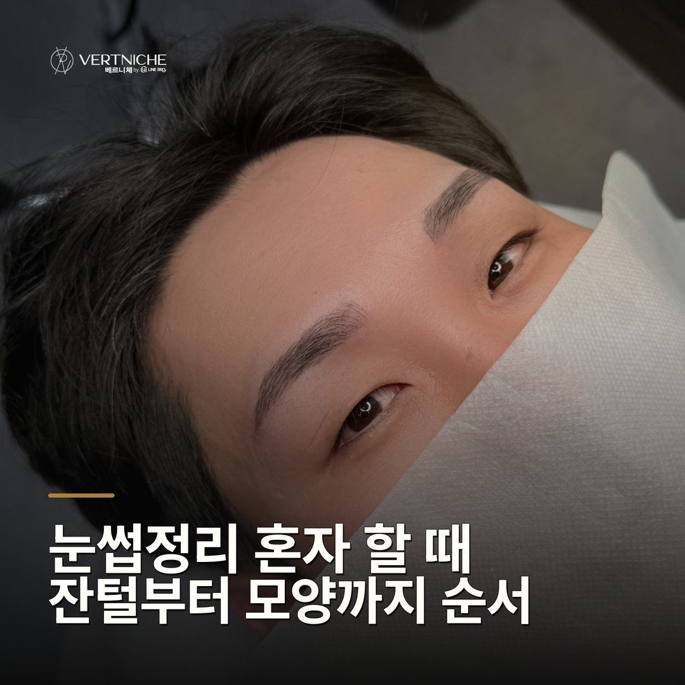

눈썹정리 혼자 할 때 잔털부터 모양까지 순서

- 눈썹정리는 밀 자리가 아니라 남길 자리를 먼저 잡는 게 순서예요
- 잔털은 눈썹칼로 한 번에 많이 밀지 말고 조금씩 확인하며 다듬어요
- 앞뒤가 비어 모양이 안 잡히는 건 정리가 아니라 밀도 문제라 따로 봐야 해요
혼자 눈썹을 정리할 때 밀 자리부터 찾으면 모양이 무너집니다. 남길 자리를 먼저 잡고 잔털만 다듬는 순서를, 대구에서 남자 눈썹을 봐 온 원장이 정리했습니다.
밀 자리를 찾기 전에 남길 자리부터 눈으로 잡아야 해요
혼자 눈썹을 정리할 때 가장 먼저 할 일은 미는 게 아니라, 남길 눈썹의 틀을 정하는 거예요. 틀이 먼저 있어야 그 밖으로 자란 잔털이 보이거든요.
혼자 정리로 해결되는 눈썹과 안 되는 눈썹이 따로 있어요
정리로 모양이 잡히려면 모양을 잡아줄 눈썹 자체가 있어야 해요. 숱이 있는 분이 바깥 잔털만 덥수룩한 경우라면, 그 잔털만 깔끔하게 밀어도 라인이 확 살아요.
잔털은 눈썹칼로, 한 번에 많이 밀지 않는 게 핵심이에요
정리 도구는 눈썹칼을 권해요. 전동트리머는 한 번에 많이 날아가서, 기준선을 잡아둬도 넘어가기 쉬워요.
자란 잔털을 꾸준히 다듬어야 처음 모양이 유지돼요
눈썹정리는 한 번 잡았다고 끝이 아니라, 라인 밖으로 자라는 잔털을 스스로 다듬어야 모양이 유지돼요. 틀을 아무리 잘 잡아도 며칠 지나면 선 밖으로 털이 올라오거든요.
상담 때 확인할 것
- 남길 틀 — 앞머리·꼬리 기준점 두 군데를 먼저 잡았는가
- 숱 상태 — 정리로 되는지, 밀도를 채워야 하는지 구분
- 도구 — 눈썹칼인가(전동트리머·가위는 한계)
- 손 자세 — 칼을 눕혀 결 바깥만 쓸어내는가
- 정리량 — 한 번에 많이 밀지 않고 나눠서 확인하는가
자주 묻는 질문
혼자 밀면 자꾸 짝짝이가 되는데 왜 그럴까요?
밀 자리부터 찾아서 그래요. 기준 틀 없이 눈에 띄는 털부터 밀면 한쪽을 더 깎게 되거든요. 남길 틀을 먼저 잡고 바깥만 조금씩 밀면서 거울로 번갈아 확인하면 훨씬 덜 틀어져요.
눈썹 가위랑 전동트리머 중에 뭐가 나은가요?
둘 다 혼자 모양 잡기엔 아쉬워요. 가위는 뿌리까지 못 닿고, 전동트리머는 한 번에 많이 날아가서 넘어가기 쉬워요. 틀을 따라 얕게 밀어내는 눈썹칼이 제일 안전합니다.
혼자 정리해도 앞뒤가 계속 비어 보이면 어떻게 하나요?
그건 정리로 채울 수 있는 영역이 아니에요. 원래 밀도가 부족한 거라 깎을수록 더 허전해 보일 수 있어요. 그릴 걸 연습하거나, 모양 자체를 채우는 방식을 상담에서 같이 보는 게 나아요.
요약입니다. 사례와 사진이 있는 전체 글은 네이버 블로그에서 볼 수 있습니다.